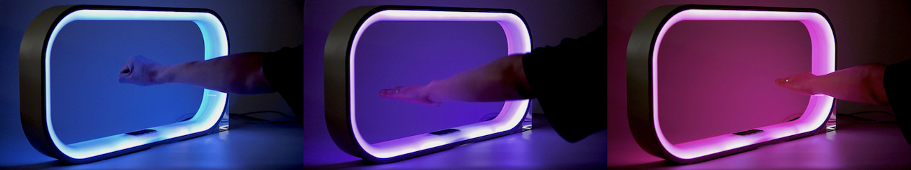

Hand-in-O
빛과 사운드 피드백을 제공하는 프레임 형태 제스처 인터페이스의 가능성 탐구
Type
Human-Computer Interaction 프로토타이핑
Affiliation
UNIST 창의디자인공학과
Role
인터랙션 리서처/엔지니어/디자이너, 프로젝트 매니저
프로젝트 기획, 문헌 조사, 인터랙션 디자인, 제품 디자인, 프로토타입 개발, 사용자 조사, 데이터 분석, 논문 집필
Tools
SolidWorks 3D모델링,
Arduino 하드웨어,
Processing 그래픽스,
Leap Motion 제스처센싱
Achievement
Duration
2018.06 ~ 08 (3개월)
Background
사용자와 전자 제품 간의 인터랙션 기술은 인간의 편의에 따라 지속해서 발전해왔다.
버튼, 다이얼과 같은 전통적인 물리적 컨트롤러에서 벗어나 음성 인식, 제스처와 같은 새로운 무형의 제어 방식이 대중화되고 있다.
그 중 제스처 인터페이스는 자율적이고 직관적인 사용성을 제공하지만, 아래와 같은 문제점이 있었다.
- 받아들이기 어려움(low acceptance): 사람들은 제스처 인터페이스를 익숙하지 않은 기술로 여겨 처음 사용하는 데 어려움을 겪는다.
- 행동유도성의 부족(lack of affordance): 제스처 인터페이스를 인지한 상태임에도 불구하고 어디에서 제스처가 인식이 되는지 잘 알지 못한다.
- 피드백의 부족(lack of feedback): 제스처 인터랙션에 대한 물리적인 피드백이 부족하여 시각, 청각적 대체 피드백이 필요하다.
Implementation
Form-driven Interaction
Tangible 인터랙션에서 외형은 사용자에게 사용 방법을 알려주는 가장 중요한 요소 중 하나이다.
물리적인 형태를 통해 사용자의 상호작용을 중재하거나 촉진할 수 있다.
사람들은 구멍이 뚫린 형태에 손을 집어넣는 습관이 있다.
그리하여, 사용자의 핸드 제스처를 유도하고 인식 범위를 안내하기 위해 프레임 형태로 디자인하게 되었다.
사람들은 구멍이 뚫린 형태에 손을 집어넣는 습관이 있다.
Visual Feedback
외형과 컴퓨팅의 올바른 조합은 사용자가 제품과 효과적으로 상호작용하도록 지원한다.
제스처의 시각적 피드백을 위해 프레임 내부를 LED 스트립으로 마무리하였다.

Poster
Video Link
Type
Human-Computer Interaction 프로토타이핑
Affiliation
UNIST 창의디자인공학과
Role
인터랙션 리서처/엔지니어/디자이너, 프로젝트 매니저
프로젝트 기획, 문헌 조사, 인터랙션 디자인, 제품 디자인, 프로토타입 개발, 사용자 조사, 데이터 분석, 논문 집필Tools
SolidWorks 3D모델링, Arduino 하드웨어, Processing 그래픽스, Leap Motion 제스처센싱
Achievement
Duration
2018.06 ~ 08 (3개월)
Background
사용자와 전자 제품 간의 인터랙션 기술은 인간의 편의에 따라 지속해서 발전해왔다.
버튼, 다이얼과 같은 전통적인 물리적 컨트롤러에서 벗어나 음성 인식, 제스처와 같은 새로운 무형의 제어 방식이 대중화되고 있다.
그 중 제스처 인터페이스는 자율적이고 직관적인 사용성을 제공하지만, 아래와 같은 문제점이 있었다.
- 받아들이기 어려움(low acceptance): 사람들은 제스처 인터페이스를 익숙하지 않은 기술로 여겨 처음 사용하는 데 어려움을 겪는다.
- 행동유도성의 부족(lack of affordance): 제스처 인터페이스를 인지한 상태임에도 불구하고 어디에서 제스처가 인식이 되는지 잘 알지 못한다.
- 피드백의 부족(lack of feedback): 제스처 인터랙션에 대한 물리적인 피드백이 부족하여 시각, 청각적 대체 피드백이 필요하다.
Implementation
Form-driven Interaction
Tangible 인터랙션에서 외형은 사용자에게 사용 방법을 알려주는 가장 중요한 요소 중 하나이다.
물리적인 형태를 통해 사용자의 상호작용을 중재하거나 촉진할 수 있다.
사람들은 구멍이 뚫린 형태에 손을 집어넣는 습관이 있다.
그리하여, 사용자의 핸드 제스처를 유도하고 인식 범위를 안내하기 위해 프레임 형태로 디자인하게 되었다.
사람들은 구멍이 뚫린 형태에 손을 집어넣는 습관이 있다.
Visual Feedback
외형과 컴퓨팅의 올바른 조합은 사용자가 제품과 효과적으로 상호작용하도록 지원한다. 제스처의 시각적 피드백을 위해 프레임 내부를 LED 스트립으로 마무리하였다.